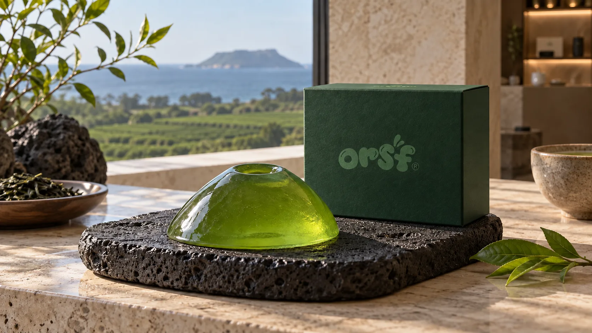
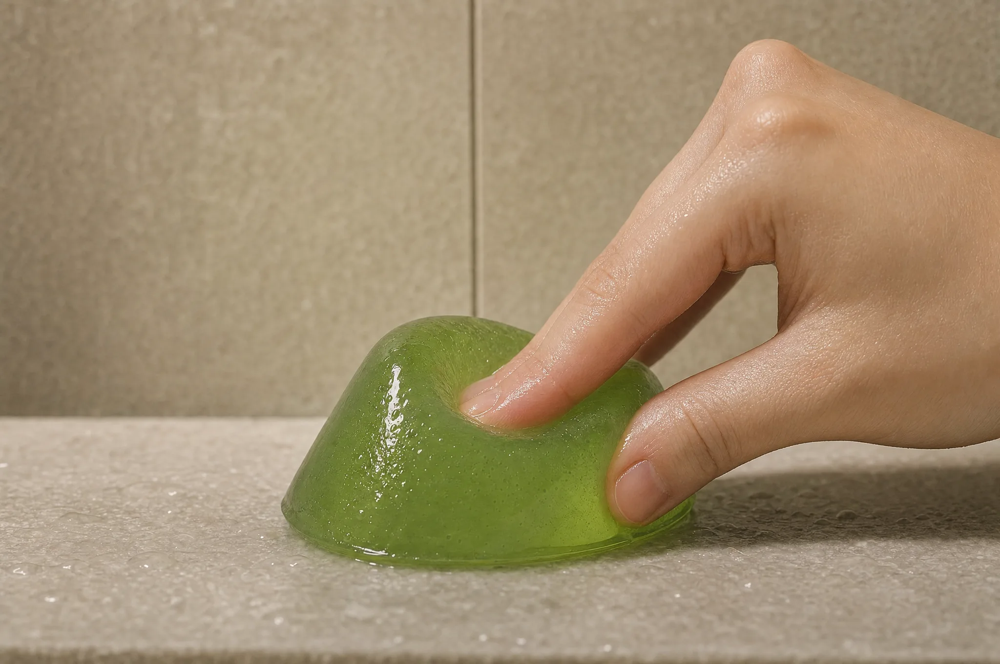
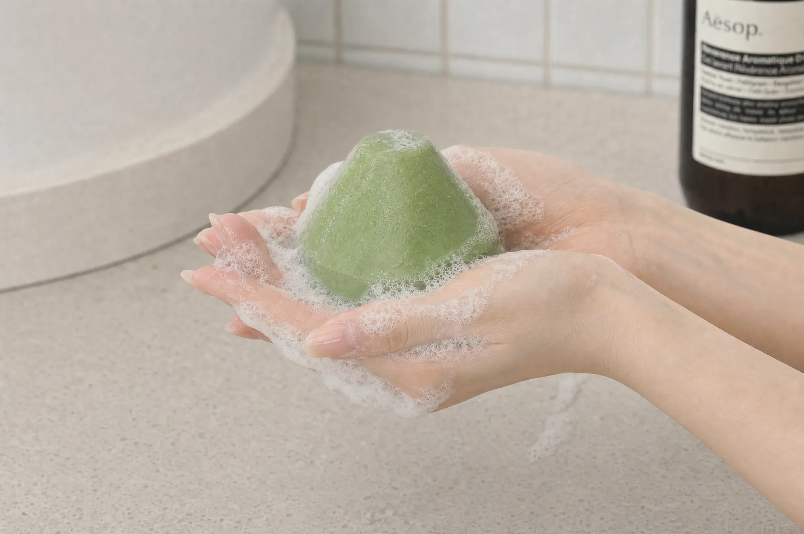
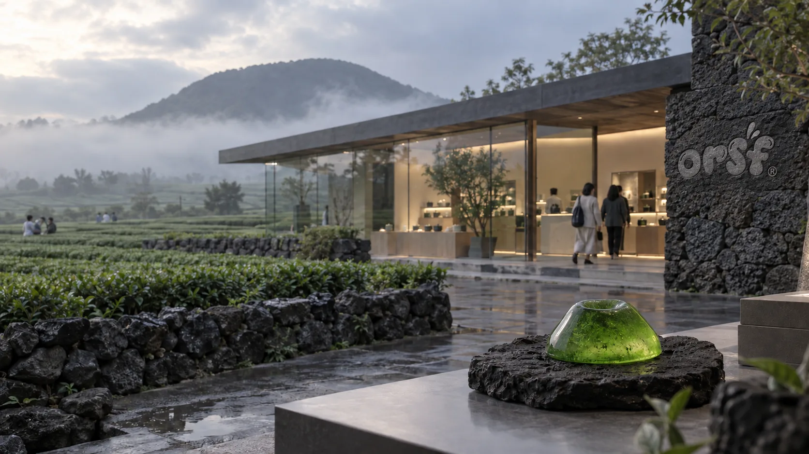
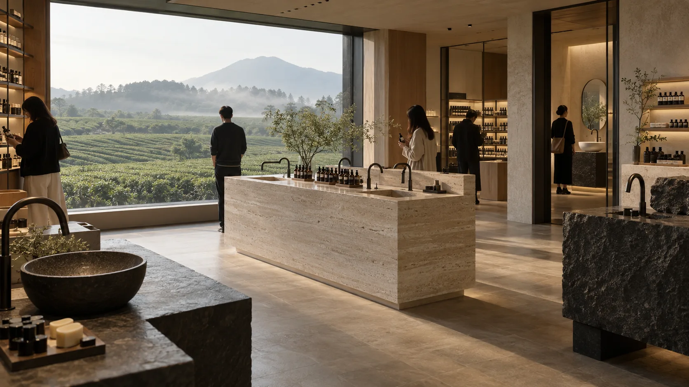
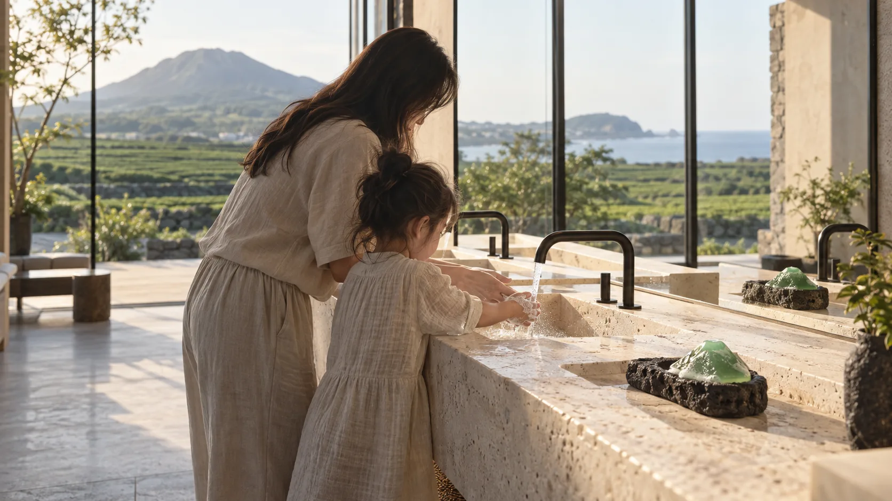
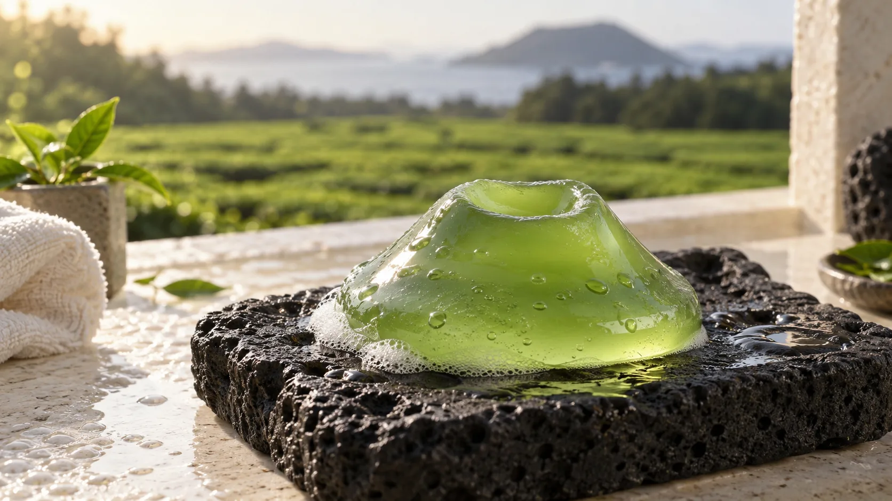

말랑말랑 비누,
우리 집에서
함께 기록해볼까요?
‘손 씻어!’ 잔소리하기 전과 후, 우리 집 세면대의 변화를 함께 기록해요.
만 4~10세 아이와 일주일쯤 써보고, 있는 그대로의 솔직한 느낌을 들려주세요.
20가구 선정 · 본품 무료 제공 · 배송비 참여자 부담
눌러도 다시 오름,
습관을 만드는 감각.
제주 오름을 쏙 빼닮은 반투명 젤리 비누를 아이와 함께 써봅니다. ‘손 씻어’라고 백 번 말하는 대신, 아이 손끝이 먼저 세면대로 향하는지 직접 보고 싶었어요.
처음 만져본 아이의 낯선 표정도, 까르르 웃는 반응도 다 좋아요. 우리 집 세면대에서 일어난 진짜 이야기를 가감 없이 들려주세요.


손끝으로 꾹 누르면 기분 좋게 퐁퐁 차오르는 탄성. 세면대로 향하는 발걸음이 놀이처럼 가벼워져요.

오르소프 30초 손씻기 가이드와 함께. 아이 손 위에서 보드랍고 조밀하게 피어나는 크림 거품으로 구석구석 즐겁게 씻어요.
제주 자연을 모티브로 빚은 정갈한 오브제. 욕실 세면대 어디에 두어도 차분하고 따뜻하게 스며듭니다.
제주의 맑은 자연과 연구소,
아이의 작은 손끝에서 만납니다.
초록빛 녹차밭의 아침 이슬, 바람 품은 오름, 그리고 현무암 아틀리에에서 시작된 손씻기 이야기입니다.
비누가 머무는 자리와 아이의 시간
세면대 위에서 피어나는 작은 변화의 순간들을 차분히 담아냅니다.

현무암 숲속에서 제주의 자연과 촉감을 연구하는 공간

아이가 스스로 다가서고 싶어지는 맑고 정갈한 공간
지구를 생각한 친환경 단상자와 싱그러운 에메랄드 비누

‘손 씻어!’ 실랑이 대신 아이와 마주 보고 웃는 30초

제주 사계절 식물 유래 원료를 정성껏 담은 보드라운 텍스처
이렇게 함께해요.
- 01
신청서 남기기
10월 3일(금) 23:59까지 아래 신청서를 남겨주세요.
- 02
선정 및 확인
선정되신 스무 분께 10월 4일까지 연락드려요. 참여 여부는 48시간 안에 알려주세요.
- 03
집에서 써보기
10월 12~14일 사이에 택배로 보내드려요. 받은 뒤 일주일 남짓 써주세요.
- 04
이야기 들려주기
다 써보신 뒤 약 5분 설문에 답해주세요. 좋았던 점도, 아쉬웠던 점도 다 좋아요.
오르소프 말랑비누
20가구 체험단
만 4~10세 아이와 일주일 남짓 써보고,
짧은 설문으로 솔직한 이야기를 들려주세요.
- 말랑비누 본품 70g 1개 + 30초 손씻기 바른 습관 가이드 제공
- 제품 무료 제공 · 배송비 참여자 부담
- 사용 후 약 5분 모바일 설문 참여
자주 묻는 질문
신청하면 누구나 제품을 받게 되나요?
신청해 주신 분들 중 스무 가구를 정성껏 선정하여 10월 4일까지 개별 연락을 드립니다.
비누의 성분은 아이에게 순한가요?
제주의 식물 유래 원료를 바탕으로 연약한 아이 피부에 자극이 없도록 순하게 만들었습니다. 온 가족이 안심하고 사용하실 수 있습니다.
설문 조사는 어떻게 참여하나요?
아이와 일주일 남짓 써보신 뒤, 문자로 보내드리는 링크를 통해 약 5분간 편안하게 남겨주시면 됩니다.
사용하기 전에 미리 알아둘 점이 있나요?
안전한 성분으로 만들었지만, 아이가 젤리처럼 입에 넣지 않도록 처음에는 보호자분과 함께 손을 씻어주세요. 동봉된 사용·보관 안내서에 자세한 팁을 담아두었습니다.